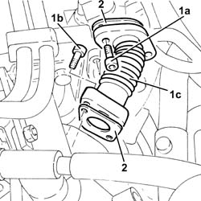

1080C28 rigid pipe from egr solenoid to throttle body r r
- Path
- Procedures > 10 ENGINE > 1080 EMISSION CONTROL SYSTEM > 1080C exhaust gas recirculation system (e.g.r.) > 1080C28 rigid pipe from egr solenoid to throttle body r r
- Kind
- repair procedure (removal / refitting; the operation number is the code)
- Applies to
- all engines; all production periods
- Interactive page
- https://sloeber94.github.io/elrnDB-fDbl/en/#/2584507
Applies to: all engines; all production periods
 Removing
Removing
 Refitting
RefittingProceed with the removal 1044B10 fuel filter assembly - r + r or replace .
1. Undo the bolts (1a) and (1b), then remove the engine oil return pipe from EGR solenoid to throttle body (1c).
2. Remove the gaskets.

Applies to: all engines; all production periods
Refitting
RemovingRefit the rigid pipe from EGR solenoid to throttle body in its housing complete with gasket and secure by tightening the bolts to the specified torque.
Proceed with the refitting 1044B10 fuel filter assembly - r + r or replace .